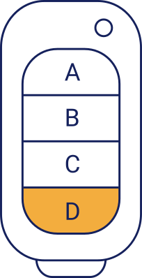

<section class="w-screen h-screen">
    <fieldset class="flex items-start gap-5 rounded-bl-[16px] rounded-br-[16px] h-[30vh] relative overflow-hidden
    bg-gradient-to-t from-[#FADF99] from-[30%] to-[#FFB034] to-[100%] p-4 pt-[65px] drop-shadow-[0_4px_5px_rgba(0,0,0,0.08)] md:pl-[5%]">
        <button @click="router.push('/login')"></button>
        <h1 class="font-[Poppins] font-bold text-[32px] text-left w-[100px] leading-[40px]">Otwórz bramę</h1>
        
    </fieldset>

    <fieldset class="flex flex-col items-center justify-center h-[calc(70vh-120px)]">
        <div class="flex h-full w-full pt-[80px] pb-[40px] justify-between">
            
            <div class="flex flex-col justify-between pr-[40px] py-[10px] w-[calc(70%-30px)] overflow-y-auto">
                <h2 class="text-[24px] font-bold leading-[30px]">Długa nazwa pilota</h2>
                <div class="flex flex-col">
                    <div v-for="(gate,index) in pagedGates" :key="index">
                        <button @click="activeGate = index"
                                :class="['max-w-[700px] text-[#15215C] rounded-[11.5px] px-3 py-1 text-[17.25px] mt-[20px] w-full min-h-[44px] border-[1px] border-[#15215C] cursor-pointer hover:bg-[#15215C] hover:text-white',
                                activeGate === index ? 'bg-[#15215C] text-white border-[#15215C]' : 'bg-white text-[#15215C] border-[#15215C] hover:bg-[#15215C] hover:text-white']">{{gate}}</button>
                    </div>
                </div>
                <p class="text-[17px]">Wybierz bramę, by otworzyć</p>
            </div>
        </div>
    </fieldset>

    <nav class="flex justify-center items-center gap-[35px] h-[60px]">
            <span v-for="n in totalPages" :key="n" @click="page = n"
                  :class="['h-[20px] w-[20px] rounded-2xl drop-shadow-[1px_1px_2px_rgba(0,0,0,0.45)] cursor-pointer', page === n ? 'bg-[#15215C]' : 'bg-[#fff]']"></span>
    </nav>

    <nav class="flex justify-around items-center h-[60px] bottom-[0] fixed w-full bg-white
                md:absolute md:top-[0] md:right-[0] md:w-[400px] md:rounded-bl-[16px] md:drop-shadow-[0_4px_5px_rgba(0,0,0,0.08)]">
        <button aria-label="gps" class="cursor-pointer"></button>
        <button aria-label="scan" class="cursor-pointer"></button>
        <button aria-label="car" class="cursor-pointer"></button>
        <button aria-label="wallet" class="cursor-pointer"></button>
        <button aria-label="menu" class="cursor-pointer"></button>
    </nav>
</section>